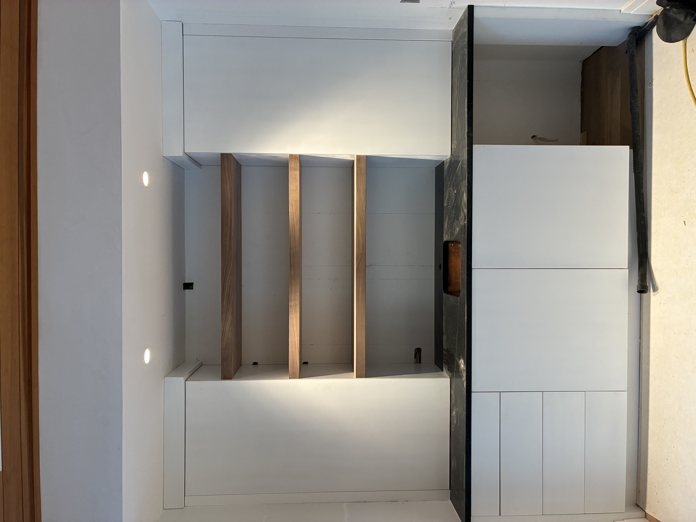
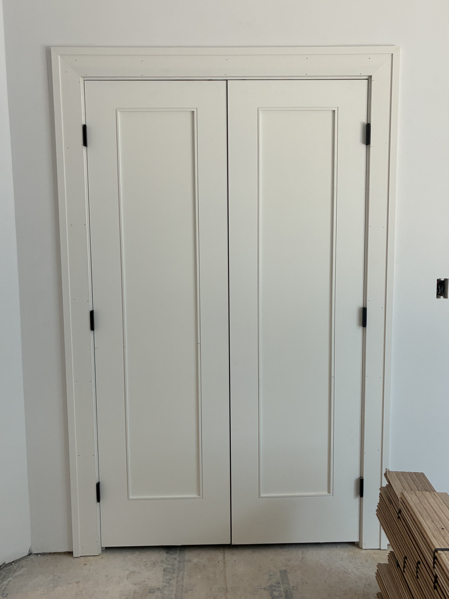
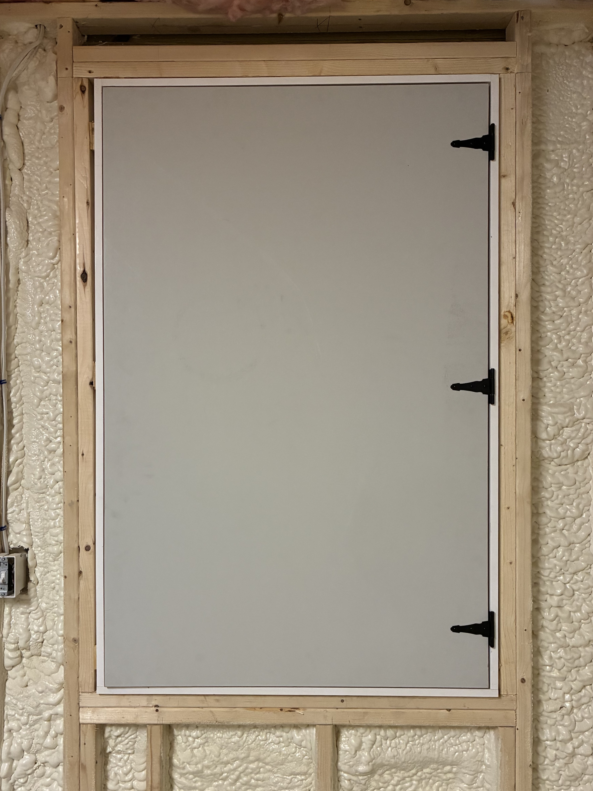
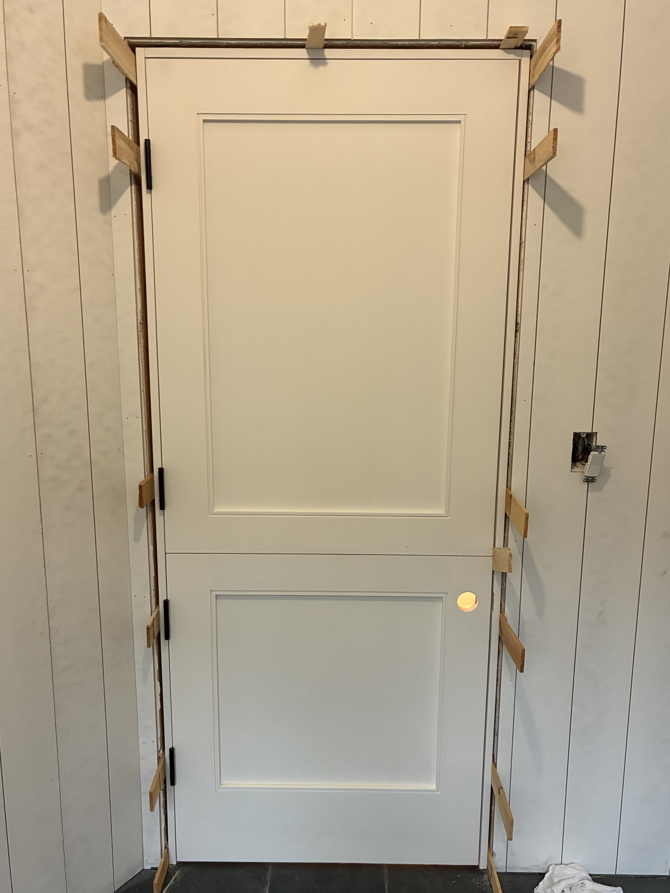
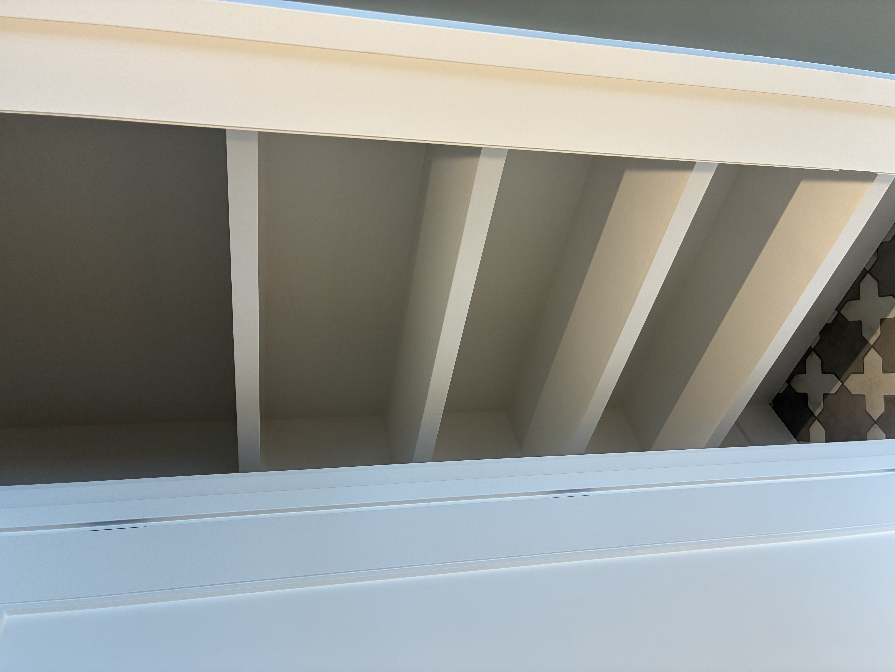
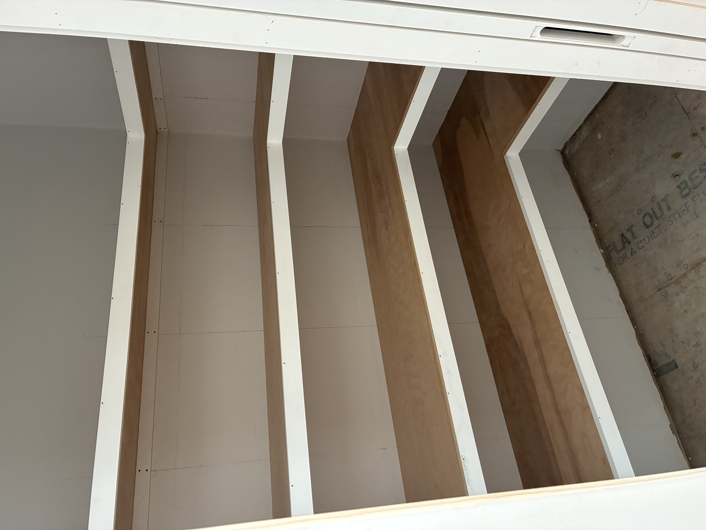
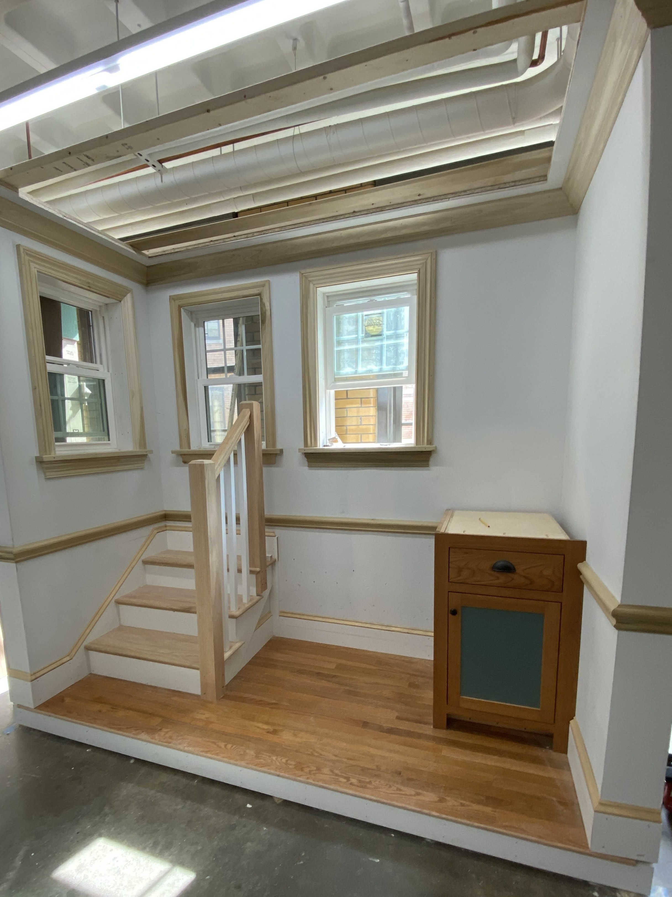

Work Category
Finish Carpentry & Trim Work
A selection of finish carpentry work organized by category, showing a range of installation, trim, and detail-oriented execution.
Overview
Finish carpentry has an outsized effect on how complete and refined a space feels. The work shown here is grouped into categories to highlight both range and consistency across different types of installation and trim work. While the applications vary, the standard remains the same: clean lines, careful alignment, and execution that supports the quality of the overall build.
Cabinet Install
Cabinet installation requires accuracy in layout, alignment, and reveal consistency so that the final result feels integrated and intentional within the surrounding space.


Doors and Windows
Doors and windows depend on careful fit, consistent margins, and clean transitions so that operation and appearance work together rather than competing with one another.



Closets and Shelving
Closet and shelving work benefits from the same level of attention as more visible finish elements, combining utility with proportion, layout, and a clean installed appearance.


General Trim
General trim work ties a space together through consistent reveals, crisp transitions, and the kind of detail that makes the finished room read as complete.


